1. المعلومات الشخصية
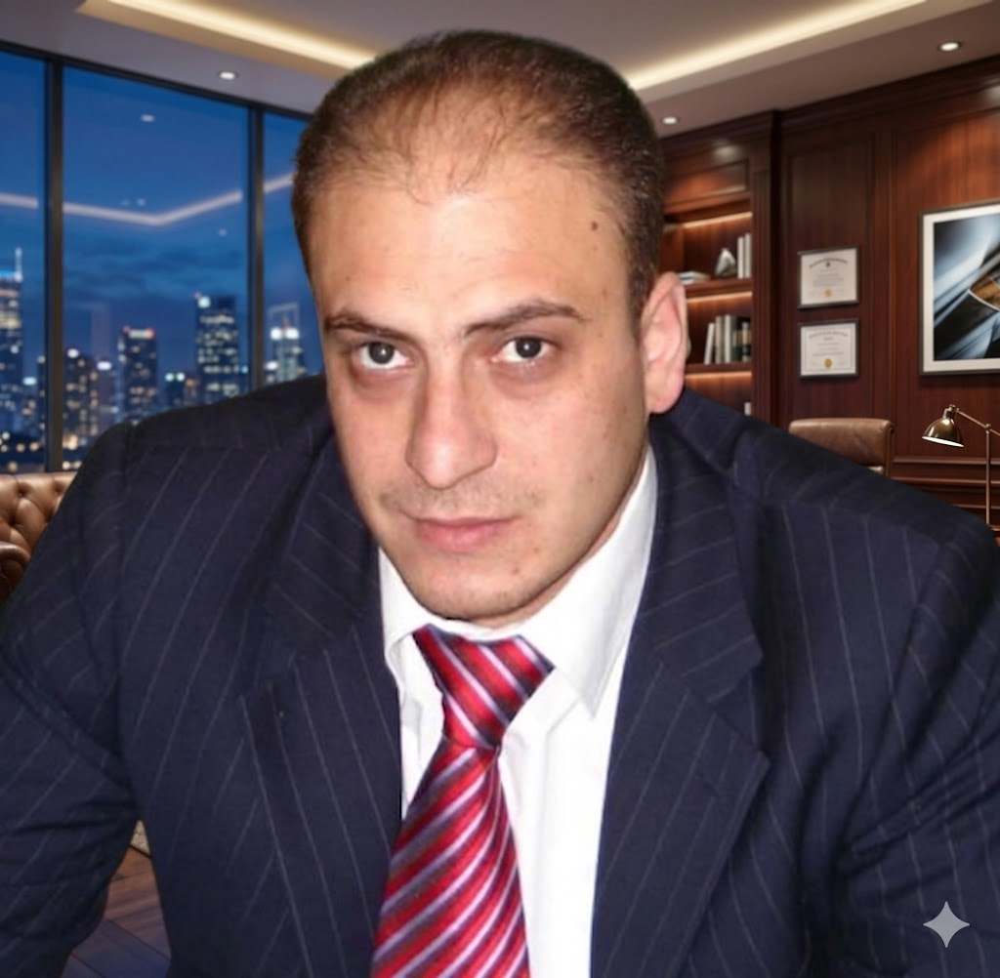
2. المؤهلات الأكاديمية
3. الخبرات التدريسية
- معلم في وزارة التربية والتعليم (2006 - 2008)
- معلم في المملكة العربية السعودية (2008 - 2021)
- معلم في وزارة التربية والتعليم (2021 - لغاية الآن)
4. الدورات التدريبية
| اسم البرنامج التدريبي والتطويري | المدة والجهة المانحة |
|---|---|
| ICDL - رخصة قيادة الحاسوب الدولية | وزارة التربية والتعليم - 60 ساعة |
| INTEL - برنامج إنتل التعليمي | وزارة التربية والتعليم - 160 ساعة |
| برنامج بناء قدرات المعلمين | وزارة التربية والتعليم - 45 ساعة |
| المناهج المطورة (المهارات الرقمية) | وزارة التربية والتعليم - 60 ساعة |
| سراج - المساعد الذكي | وزارة التربية والتعليم - 30 ساعة |
| BTEC كفايات | وزارة التربية والتعليم - 20 ساعة |
| BTEC EDUCATOR | وزارة التربية والتعليم - 30 ساعة |
| Oracle9i Form developer & SQL | مركز منسي للتكنولوجيا - 60 ساعة |
| SOLARIS UNIX (Introduction Unix & Solaris Administration) | شركة الامتياز للأنظمة الإلكترونية - 40 ساعة |
| OMNIDOCS Client & Administrator | شركة الامتياز للأنظمة الإلكترونية - 24 ساعة |
| أساليب وطرق التدريس الحديثة | جامعة دار العلوم الأهلية بالرياض - 12 ساعة |
الجزء الأول: رحلة الدبلوم (البيان الختامي)
الجزء الثاني: معايير المعلمين والشواهد
أولًا: أدلة المعرفة المهنية
المقال النقدي والمقال التأملي:
تحليل محتوى دروس:
نماذج من مهمات المساق الأول الرئيسية:
نماذج من دراسة الحالة من المساق الأول:
تحليل ممارسات صفية بناء على فهم المساق الأول:
أولًا: أدلة المعرفة المهنية
خطط دروس توضح دمج المعرفة التربوية بالمبحث تعكس فهما واضحا للدمج والتمايز في بيئة التعلم:
أنشطة صفية مبتكرة:
نماذج من مهمات المساق الثاني الرئيسية:
البحث الاستقصائي:
صور وفيديوهات تطبيق البحث الاستقصائي
| 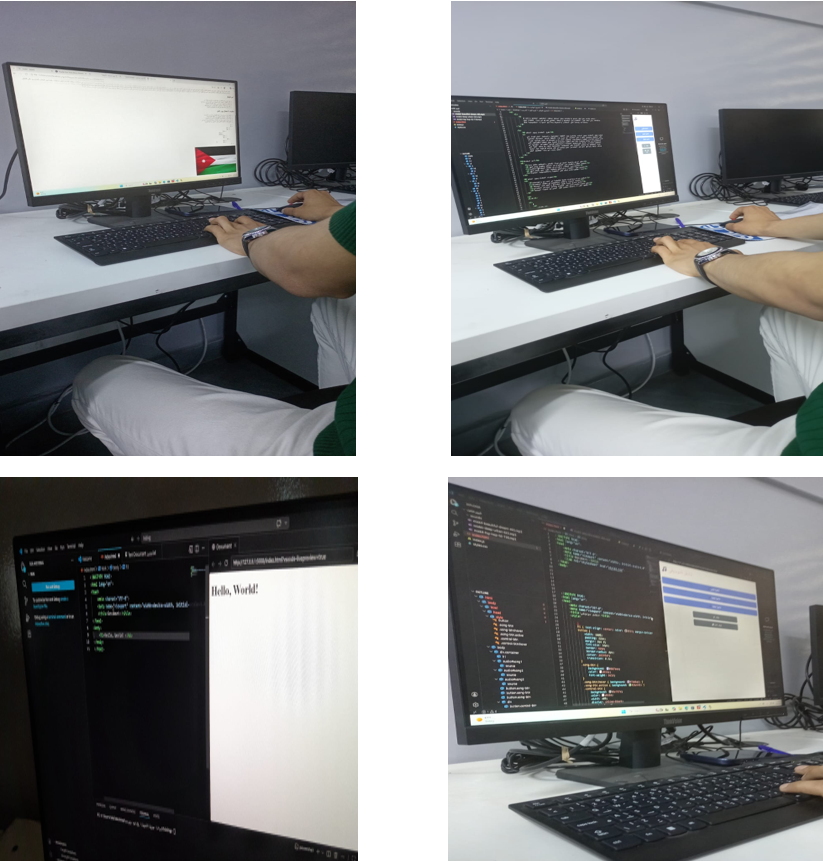 |
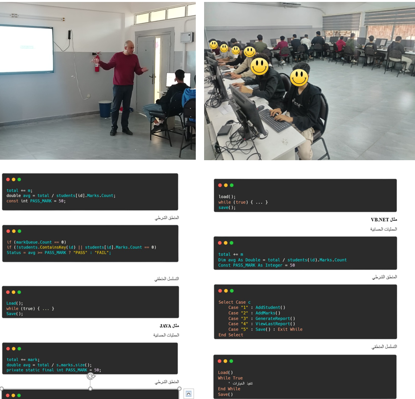 |
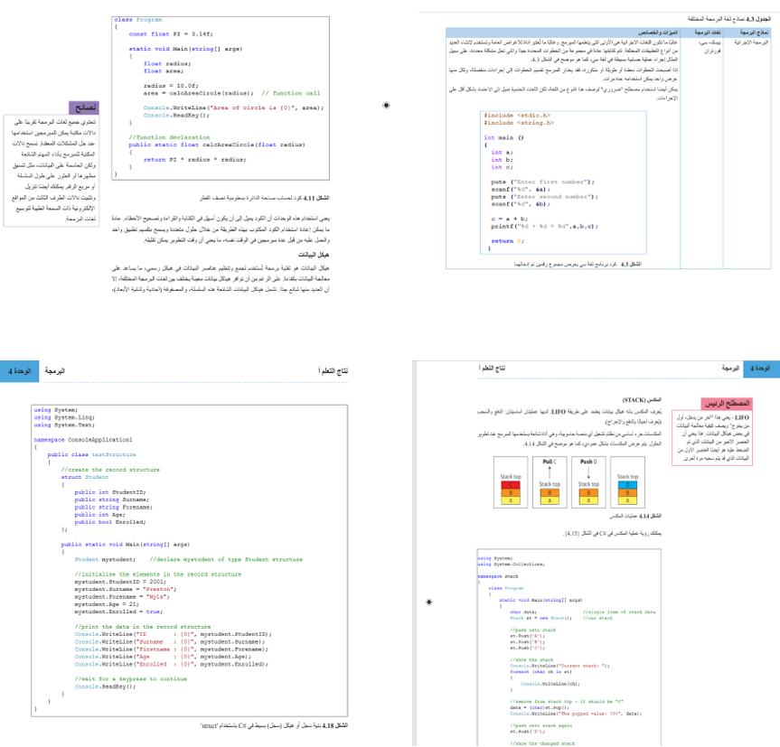 |
 |
(البوستر) العرض التقديمي لتقرير البحث الاستقصائي
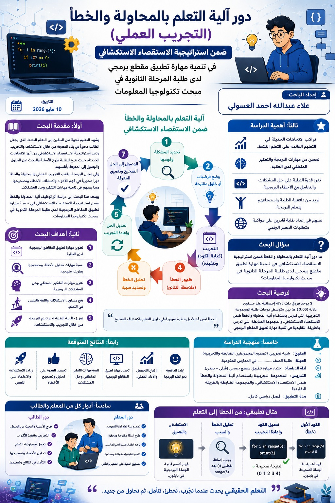
أدوات تقويم تم إعدادها أو اختبارات وجدول المواصفات:
استخدام أدوات رقمية في التدريس:
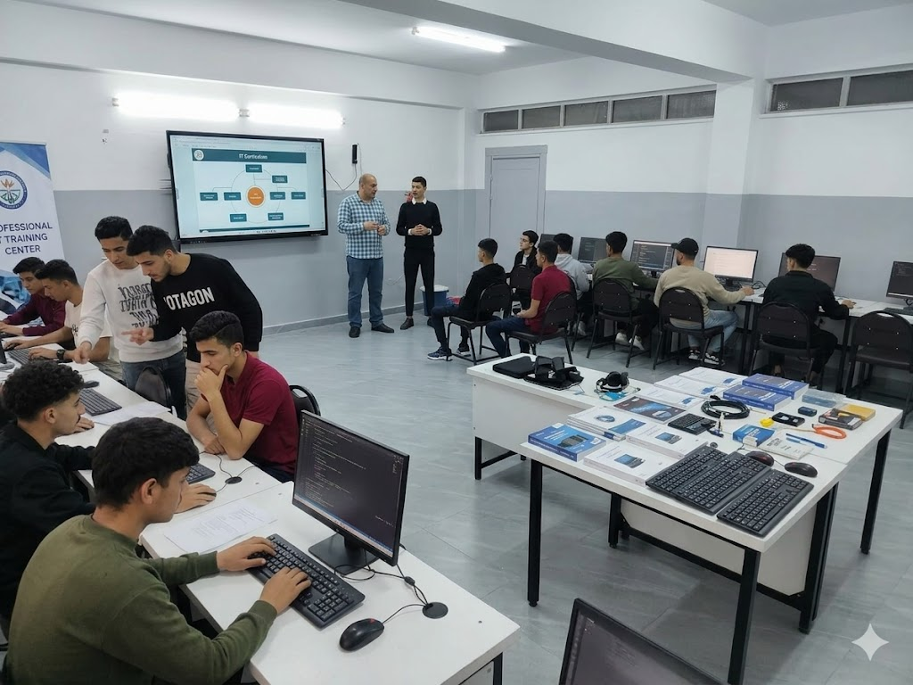
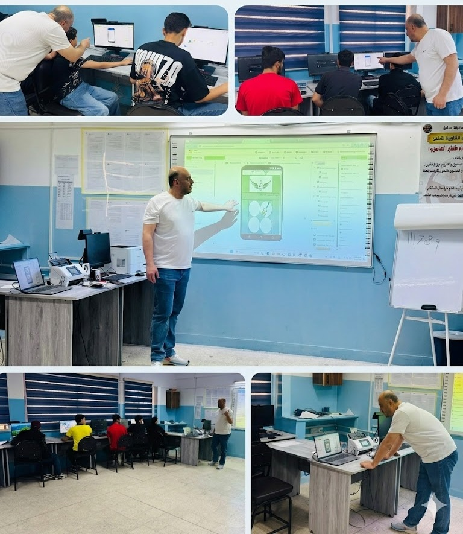
أداة التطور المهني البنائية والختامية :
تقرير الجلسة الإرشادية البنائية والختامية :
نموذج التغذية الراجعة للتدريس المصغر ( عدد 2) :
نموذج الملاحظة الرسمية (عدد 2) :
ثالثًا: أدلة الأخلاقيات المهنية
شهادات حضور لدورات تدريبية:
| 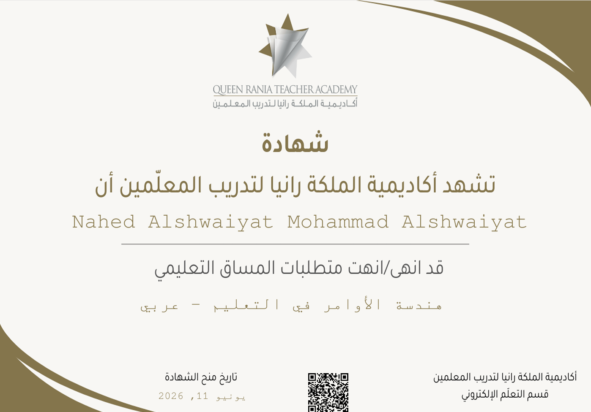 |
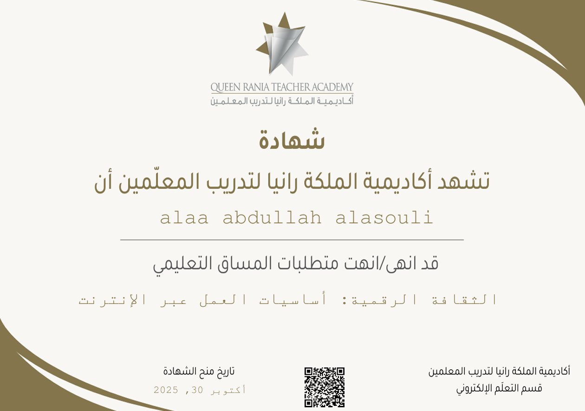 |
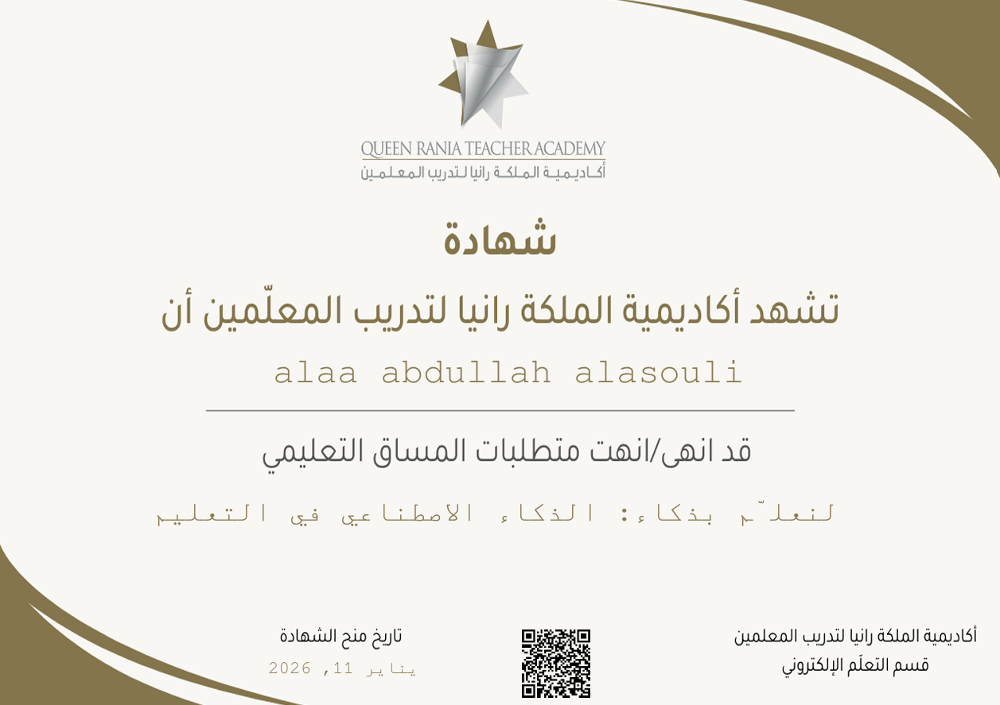 |
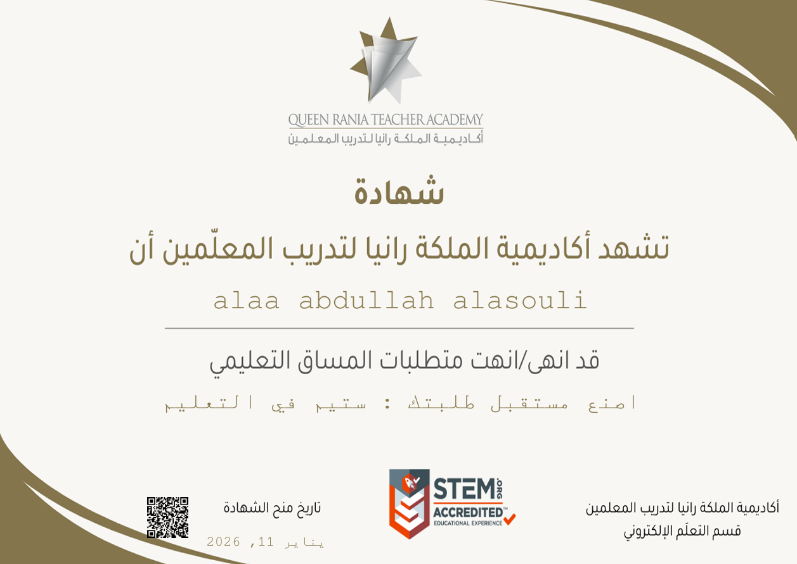 |
تقييمات من مشرفين أو من الصديق الناقد أو مدير المدرسة:
خطة تطوير مهني مستقبلية:
مقطع الفيديو الذي تم تصويره في اللقاء التأملي:
بصمات تربوية
مبادرة: البنية التحتية لتكنولوجيا المعلومات
تتضمن هذه المبادرة اصطحاب طلاب الأول ثانوي تكنولوجيا المعلومات إلى مختبر الثاني ثانوي قيد الإنشاء للتعرف على كيفية إنشاء البنية التحتية لتكنولوجيا المعلومات، وربط الجانب النظري بأنظمة تكنولوجيا المعلومات الإدارية، وفهم الأسس الاستراتيجية للبنية الأساسية للشبكات وتطبيق مفاهيم الوحدة الدراسية المقررة لهذا الفصل.
١. دور المعلم والطالب في المبادرة
التخطيط للزيارة
- التخطيط للزيارة الميدانية وربطها بمخرجات التعلم الخاصة بوحدة البنية التحتية لتكنولوجيا المعلومات.
- التنسيق مع إدارة المدرسة والقائمين على إنشاء المختبر لتحديد موعد الزيارة ومحاورها.
- إعداد أسئلة وأنشطة موجهة تساعد الطلبة على ملاحظة مكونات البنية التحتية للشبكات والأنظمة الإدارية.
التنفيذ والمتابعة
- مرافقة الطلبة أثناء الزيارة وشرح أهدافها التعليمية.
- توجيه الطلبة لملاحظة مكونات المختبر مثل الخوادم، وحدات الشبكات، الكابلات، وأجهزة الربط المختلفة.
- ربط المفاهيم النظرية التي تمت دراستها في الصف بالتطبيقات العملية التي شاهدوها في المختبر.
- تشجيع الطلبة على طرح الأسئلة والمناقشة والتفاعل مع المختصين المشرفين على المشروع.
التقييم وأثر النشاط
- مناقشة الطلبة بعد الزيارة للتأكد من فهمهم لمفاهيم البنية التحتية لتكنولوجيا المعلومات.
- تكليف الطلبة بإعداد تقرير أو عرض تقديمي يلخص ما تعلموه خلال الزيارة.
- تقييم مدى تحقيق أهداف الزيارة من خلال ملاحظات الطلبة وإجاباتهم وأنشطتهم اللاحقة.
٢. الأثر والنتائج
حدث تحسن ملحوظ في فهم الطلبة لمفهوم البنية التحتية لتكنولوجيا المعلومات، حيث انتقلوا من التعرف على المفاهيم بصورة نظرية داخل الصف إلى مشاهدتها وتطبيقها في بيئة واقعية. كما ازدادت قدرتهم على الربط بين مكونات الشبكات والأنظمة الإدارية ودورها في المؤسسات المختلفة.
- زيادة مشاركة الطلبة في المناقشات الصفية المتعلقة بالبنية التحتية والشبكات.
- طرح أسئلة متقدمة أثناء الزيارة وبعدها تعكس عمق الفهم والاهتمام بالموضوع.
- تحسن نتائج الطلبة في الأنشطة والتكليفات المرتبطة بالوحدة الدراسية.
- قدرة الطلبة على توظيف المصطلحات التقنية بصورة صحيحة عند إعداد التقارير.
- إظهار حماس أكبر نحو التخصصات التقنية ومجالات تكنولوجيا المعلومات.
نعم، تم عرض تجربة الزيارة الميدانية على الزملاء في القسم لما حققته من أثر إيجابي على تعلم الطلبة، وأبدى عدد منهم اهتمامًا بتوظيف الزيارات التعليمية والأنشطة التطبيقية في تدريس وحدات أخرى. كما شجعت التجربة على تعزيز التعاون بين المعلمين وإدارة المدرسة للاستفادة من المختبر الجديد في تنفيذ أنشطة عملية مستقبلية تخدم مختلف المساقات التقنية.
٣. تأمل ذاتي حول المبادرة
ماذا تعلمت من هذه التجربة؟
تعلمت أهمية ربط الجانب النظري بالتطبيق العملي في تدريس تكنولوجيا المعلومات، وأن توفير خبرات تعليمية واقعية يسهم في ترسيخ المفاهيم لدى الطلبة بصورة أعمق. كما أدركت قيمة التعلم القائم على الخبرة والملاحظة المباشرة في تعزيز دافعية الطلبة للتعلم وتنمية فضولهم نحو المجالات التقنية. كذلك اكتسبت خبرة أكبر في التخطيط للأنشطة الميدانية وتنظيمها بما يحقق أهداف التعلم المنشودة.
كيف أثّرت على تطورك المهني؟
أسهمت هذه التجربة في تطوير ممارساتي التعليمية من خلال توظيف استراتيجيات تعلم أكثر تفاعلية وتركيزًا على المتعلم. كما عززت قدرتي على تصميم أنشطة تربط المعرفة النظرية بواقع الحياة العملية، مما ساعدني على تقديم تعلم أكثر معنى للطلبة. كذلك زادت من مهاراتي في التخطيط والتنسيق والتقييم، وشجعتني على البحث عن فرص جديدة لإثراء بيئة التعلم بالأنشطة التطبيقية والزيارات الميدانية، بما ينسجم مع متطلبات التعليم الحديث ويعزز جودة العملية التعليمية.
الأدلة المرفقة
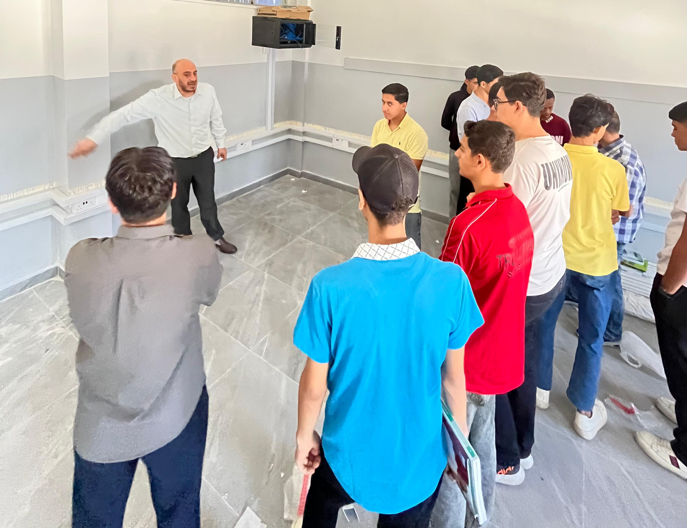
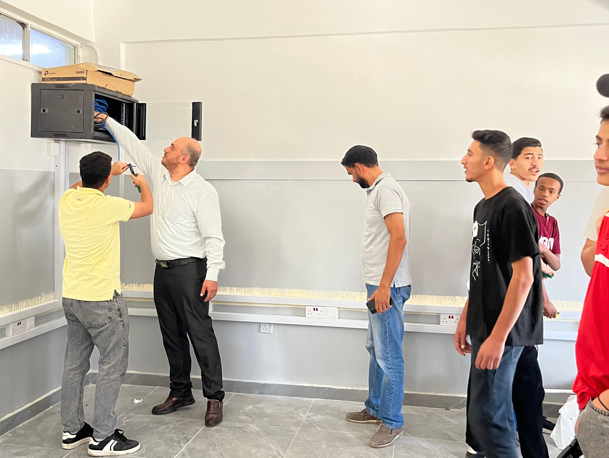
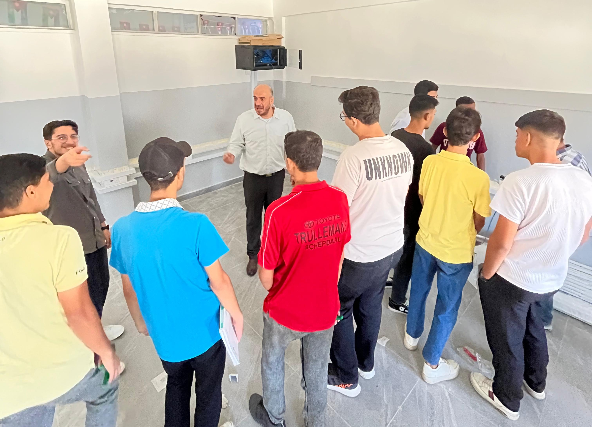
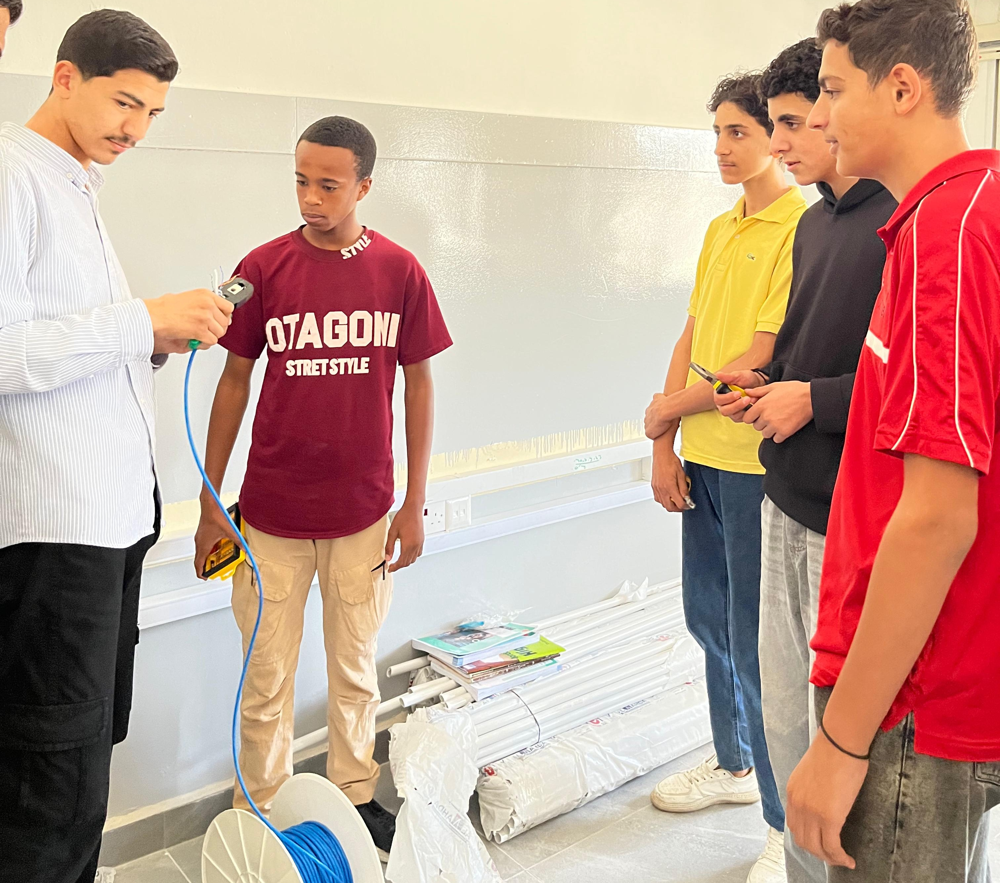